Research
Fisheries Monitoring Technician
Washington Department of Fish and Wildlife
Salmon Fisheries Monitoring
I conducted creel surveys and assisted with salmonid sampling along the Columbia River and tributaries to help inform salmon fisheries management. My responsibilities included:
Interview anglers and record data for estimating catch of target and non-target species onto an electronic tablet
Collect and record biological data from salmonids, including species, coded-wire tags, PIT tags, DNA, fork length, scales, and clip status following appropriate protocols for interview location and angler type
Multi-task interview with catch sampling to ensure quick and positive interactions with bank and boat anglers
Assist with non-Treaty and Treaty commercial sampling of Fall Chinook, Coho, and Steelheard
Handle live salmonids, insert Floy tag in target species, and sample wild salmonids at Pound Net fisheries
Collect biological samples and snouts from tagged, spawned out salmonids at state hatcheries
Assist with operations of the Modrow weir including scanning and sampling returning hatchery broodstock salmonids
Collect salmonid carcasses from stream and into the survey boat, then sample target species and insert markers to inform a project tracking carcass capture rates for stream surveys
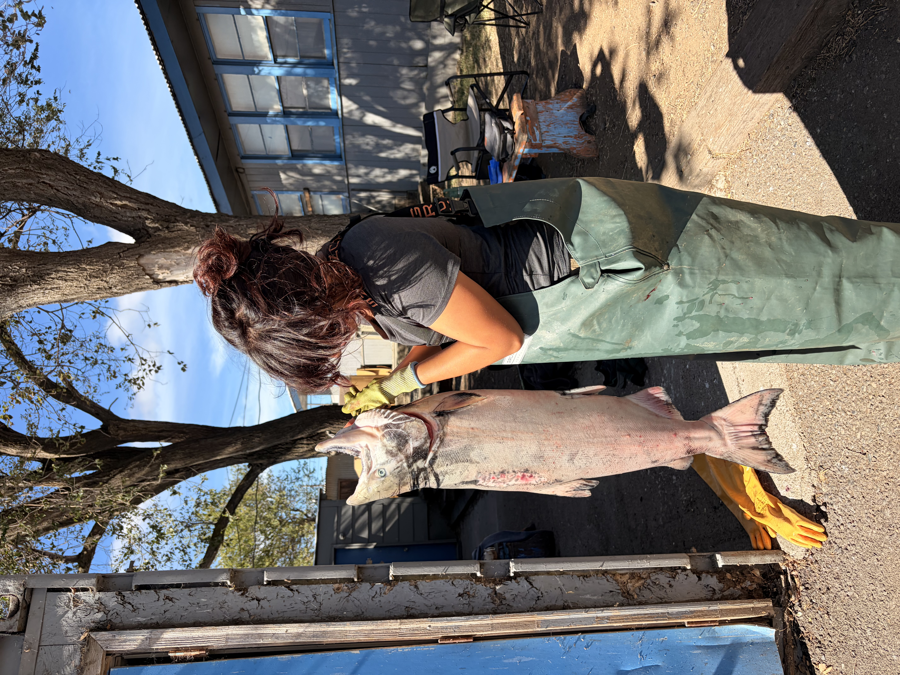
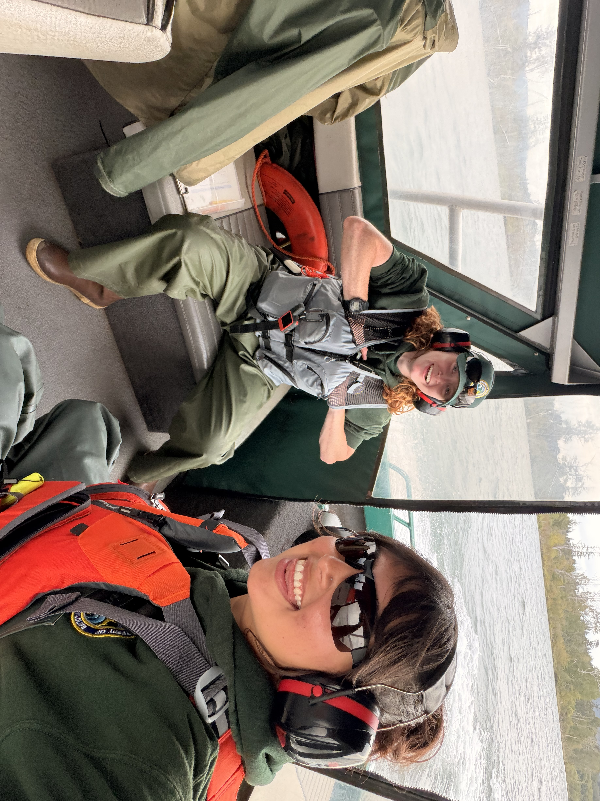
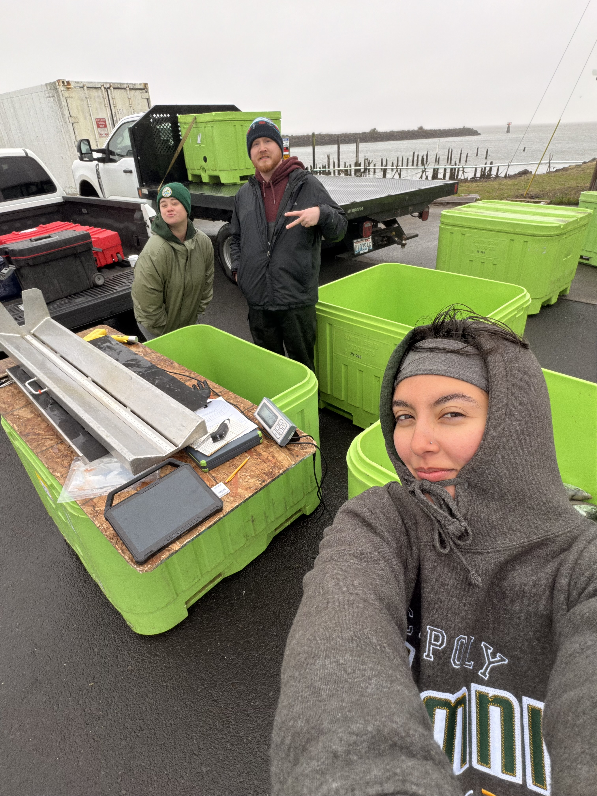
Avian Evolution, Cal Poly Pomona
PI: Dr. Elizabeth Scordato
Parallel Selection for Commensal Behavior
Human activity has led to rapid landscape changes that can alter the behavior of wild populations. However, it is unclear whether different populations exposed to similar anthropogenic environments adapt in similar ways. In this study, we used human-commensal populations of Oceanic Swallows as a model to assess how birds may adapt to living in close proximity to humans. To assess whether different, independently commensal populations exhibit evidence of parallel adaptation to human environments, we used FST, Pi, and Dxy to identify outlier regions differentiated between commensal and non-commensal populations. Aiding Sam Sudoko, Biology master’s student, I conducted these analyses and found several shared regions of high Fst in commensal populations that suggest parallel selection across different, independently commensal populations. By untangling the underlying genetic mechanisms of evolutionary adaptation within human-modified environments, this study will provide insight into how human activity can shape behaviors in wild populations.
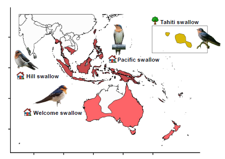
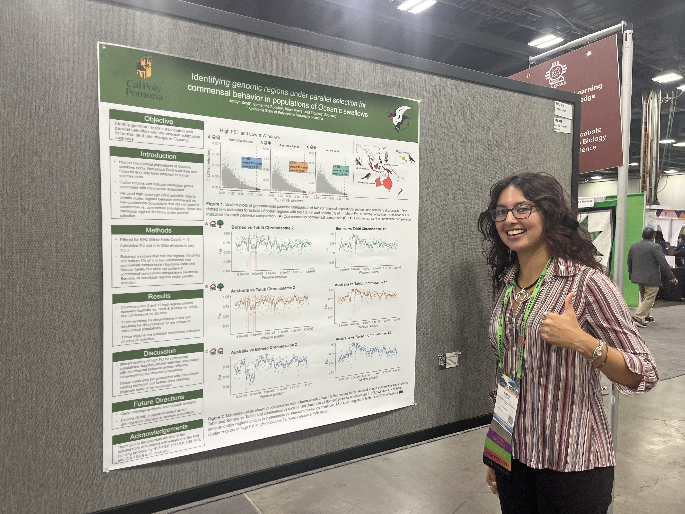
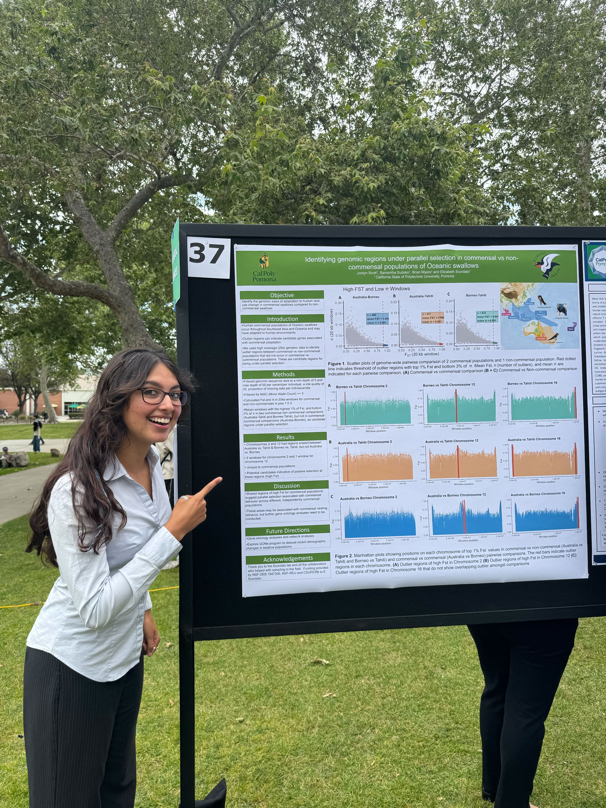
Genetic Load in Continental vs Island Populations
Genomic erosion plagues many wildlife populations, evident through an accumulation of deleterious alleles, loss of genome-wide diversity, and inbreeding depression. These additive symptoms can result in reduced adaptability, survival, and reproduction in populations. By investigating the total genetic load, masked load, realized load, and indices of inbreeding (FROH, ROH, etc.) within a population, you are able to assess a population’s ability to persist through purging. Purging of highly deleterious mutations can allow persistence and recovery in populations vulnerable to inbreeding depression, low connectivity, and low genetic diversity. By understanding this mechanisms’ relationship to population size and isolation time, we can inform proactive measures to address genomic erosion in vulnerable populations before the time-lag between genomic and demographic impact closes. For my senior project at Cal Poly Pomona, I compared genetic load and purging measurements in continental versus island populations of Oceanic swallows and found that purging may be occurring in island populations of swallow. I am currently assessing how isolation (divergence times) is associated with purging in these populations.
.JPG)
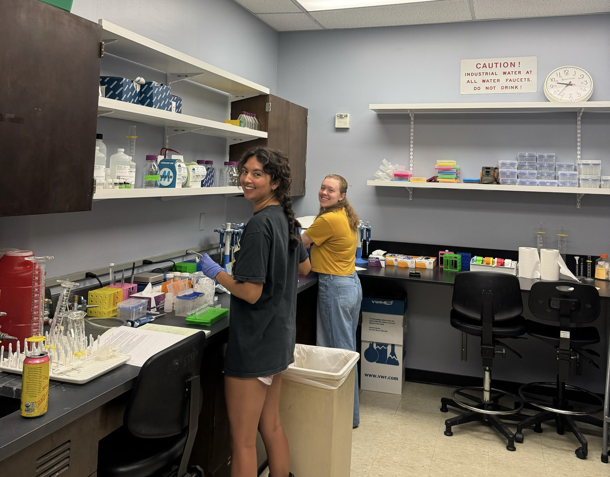
Invertebrate Zoology and Systematics, California Academy of Sciences REU
Mentors: Dr. Rebecca Johnson, Dr. Terry Gosliner
Remapping the Ecologically Complex Nudibranch Genus Tenellia
Our knowledge about speciation is still largely biased towards terrestrial organisms, while most of this knowledge cannot be applied to marine speciation. However, Nudibranch speciation in particular is important to understand as speciation events may be indicative of range shifts, anthropogenic disturbance, or introduction of invasive species. They serve as bioindicators in conservation by providing valuable information on fine-scale environmental changes; thus, maintaining an accurate, accessible record of their diversity is important. As an REU intern at the California Academy of Sciences, I sequenced and remapped the ecologically complex and widespread genus Tenellia. I helped deisng a PCR protocol that led to the successful sequence of several museum specimen. Then, I analyzed nuclear and mtDNA, revised Bayesian/ML trees, created species distribution maps using R, and performed comparative morphological analysis (using SEM). I concluded that the tropical specimen found in Panama are a potential new species closely related to a Tenellia specimen discovered in an estuarine habitat near San Francisco Bay, a finding highlighting how human transport introduces non-native organisms.
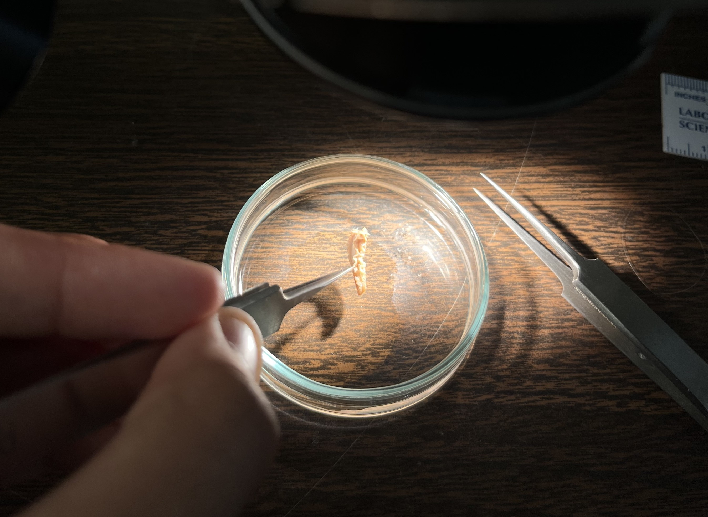
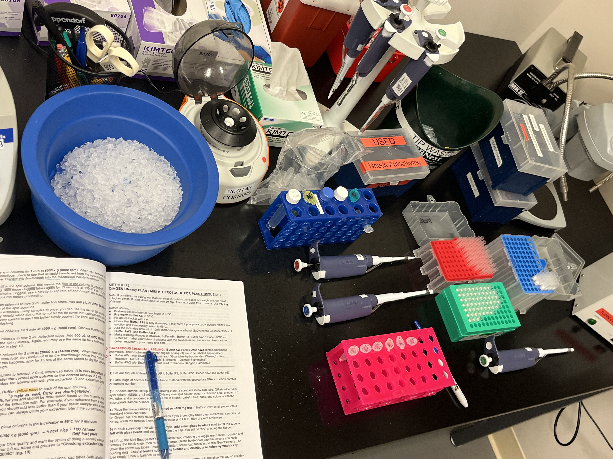
Intertidal Ecology, Cal Poly Pomona
PI: Dr. Jayson Smith
pH Effect on Germination Development and Success of Pelvetiopsis californica
The rockweed, Pelvetiopsis californica (Phaeophyceae, Fucales) occupies the middle intertidal zone spanning from northern California to Baja California. Like other rockweeds in temperate regions, Pelvetiopsis is a canopy-forming species that protects over 150 intertidal species from thermal and wave stress. Over the past several decades, Pelvetiopsis populations have significantly declined or are completely absent from regions of California where they have been historically present (Fales 2022; Ambrose and Smith 2005). Specifically, ocean acidification has the potential to enhance or inhibit growth in calcified seaweeds; however, few studies examine how extreme pH can impact the early life history stages of Pelvetiopsis californica. In my study, I collected 10 (n=5 for each treatment) sexually mature Pelvetiopsis receptacles during low tide twice per month for 8 months. Then, conducted a laboratory-controlled experiment to evaluate how low versus ambient pH impacts the germination and development of Pelvetiopsis germlings. I found no significant effect of low pH on the germination or germling growth over time. To further improve this study, I would conduct the same lab-controlled experiment, but obtain samples from different populations across the Southern California coast and evaluate the combined and individual effects of temperature and pH.
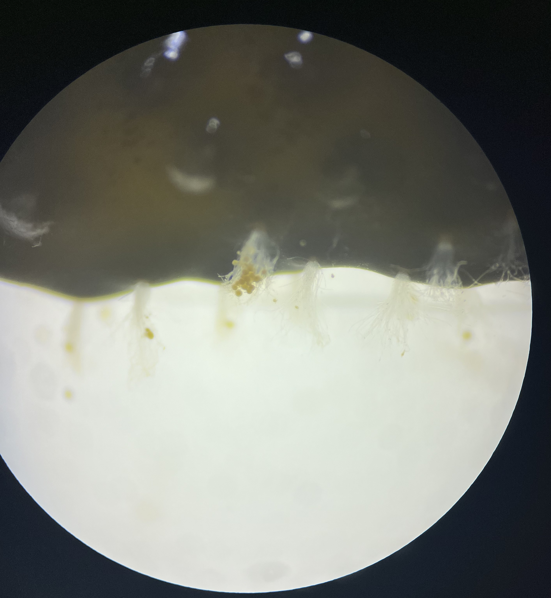
Pelvetiopsis californica Restoration and Biodiversity Sampling
In maintaining the biodiversity of the higher rocky interidal zone, rockweed species have three primary roles: to provide a habitat for micro and macro invertebrates, sequester carbon within their tissues, and yield primary production to the marine energy web. Studies have found that Pelvetiopsis and Silvetia californica are absent in sites, with complementary environmental conditions, where they were previously found to be abundant. To help restore these two ecosystem engineers, I aided graduate student Rianna Hernandez-Thorne, and Dr. Jayson Smith with their field work, where they investigated the best techniques to track and restore Pelvetiopsis and Silvetia californica. I would help obtain transplants of both species, then relocate them to plots (at another site) where they were absent using horizontal versus vertical and single versus clustered transplant patterns. To measure success, I would take survival data points, and to measure growth, I would utilize the touch method and recruitment of new individuals.
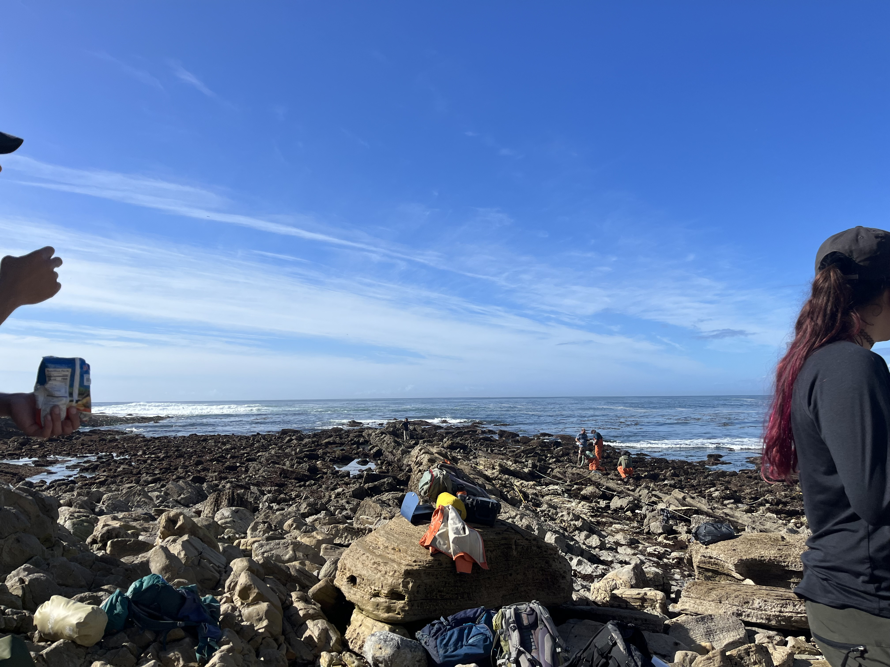
Research Courses
Tropical Field Biology (Panama)
As part of the Tropical Field Biology course, I was able to travel to Panama to conduct a group pilot study and help carry out snorkel surveys for a Nudibranch biodiversity study led by Dr. Angel Valdes. Stripped parrotfish are roving herbivores and facilitate coral recruitment by consuming turf algae on various substrates. Comparatively, three-spotted damselfish are territorial algae gardeners that often chase other hebivores out of their ‘home range’. As a group, we were interested in how this territorial behavior interacts with the more passive herbivory of stripped parrotfish. After conducting snorkel surveys, we found that parrotfish were attacked more than five times had lower bite rates overall. Additionally, we concluded that there were slightly more damselfish attacks on larger initial phase stripped parrotfish, which may be linked to size dependent aggression and feeding behaviors.

Coral Reef Ecosystems (Hawaii)
As part of the Field Biology course focused on coral reef ecosystems, I was able to travel to Hawaii to conduct a pilot study and conduct snorkel surveys for the long-term biodiversity monitoring project led by Dr. Jayson Smith and Dr. Jeremy Claisse. As territorial herbivores, yellow tang remove algal buildup, clearing space for coral recruits; however, little is know about their differential aggressive behaviors. My group pilot project sought to determine whether yellow tang display different frequencies of aggressive behaviors towards other species (interspecific) compared to other yellow tang, both female and male (intraspecific). We found that males tended to display a higher percentage of overall aggression, often attacking other male yellow tang than other herbivore species. Comparatively, females tended to display a lower frequency of aggressive attacks, suggesting males may be more physically territorial than females.
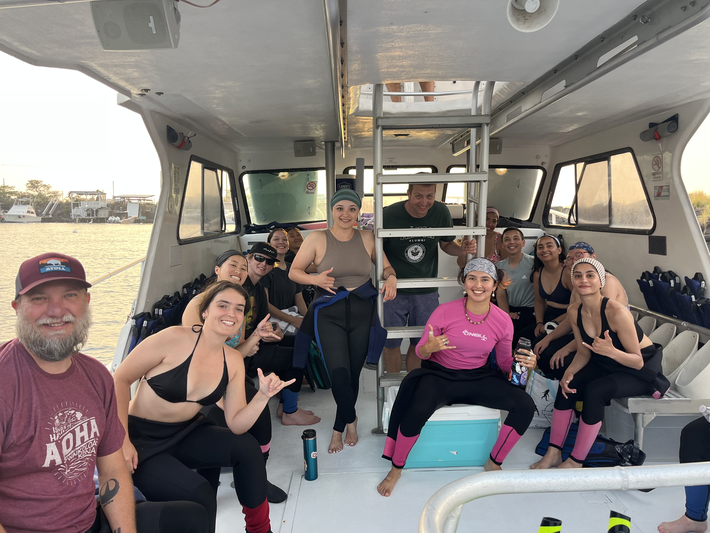